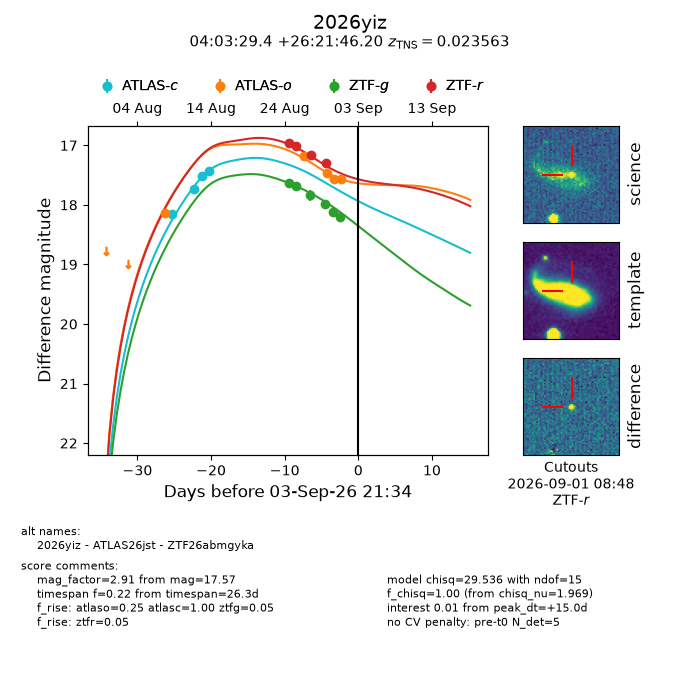
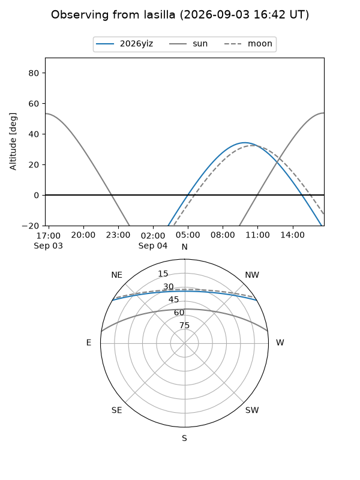
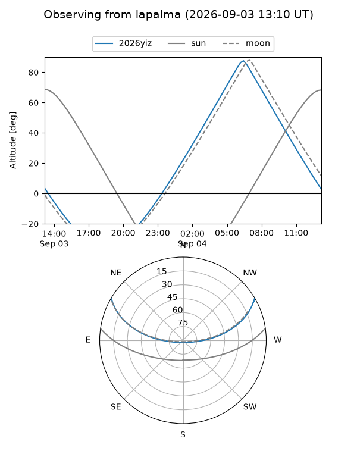
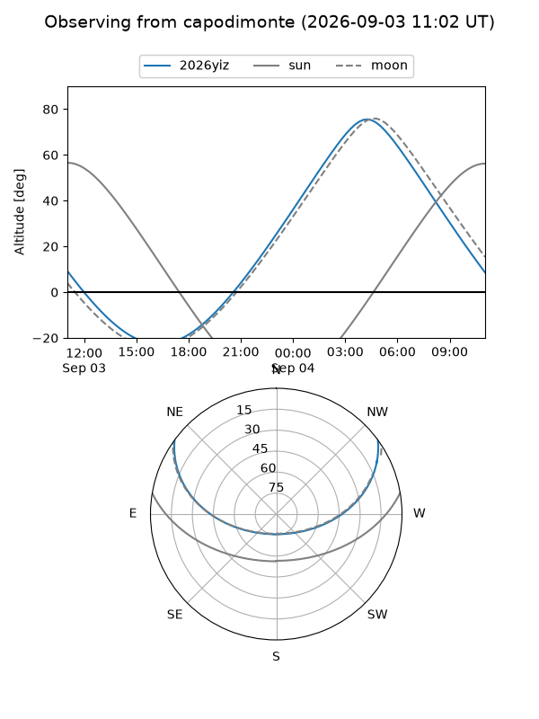
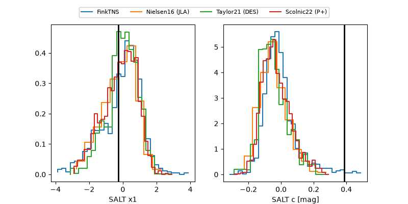

2026yiz
Target 2026yiz at 2026-09-03 21:36
Aliases and brokers:
FINK-ZTF: ztf.fink-portal.org/ZTF26abmgyka
Lasair-ZTF: lasair-ztf.lsst.ac.uk/objects/ZTF26abmgyka
ALeRCE-ZTF: alerce.online/object/ZTF26abmgyka
YSE-PZ: ziggy.ucolick.org/yse/transient_detail/2026yiz
TNS name: wis-tns.org/object/2026yiz
Direct TNS query: direct search
alt names
ZTF26abmgyka (ztf,fink_ztf)
2026yiz (tns,yse)
ATLAS26jst (atlas)
Coordinates:
equatorial (ra, dec) = 60.8723,+26.36283
equatorial (HMS+DMS) = 04:03:29.35,+26:21:46.20
galactic (l, b) = (167.8236,-19.32768)
Flags:
TNS type: SN Ia
TNS redshift: 0.0236
peak dt: +15.0
Photometry:
last atlasc=17.42, atlaso=17.57, ztfg=18.20, ztfr=17.30
4 atlasc, 5 atlaso, 6 ztfg, 4 ztfr detections
Lightcurve

Visibility



Additional plots
